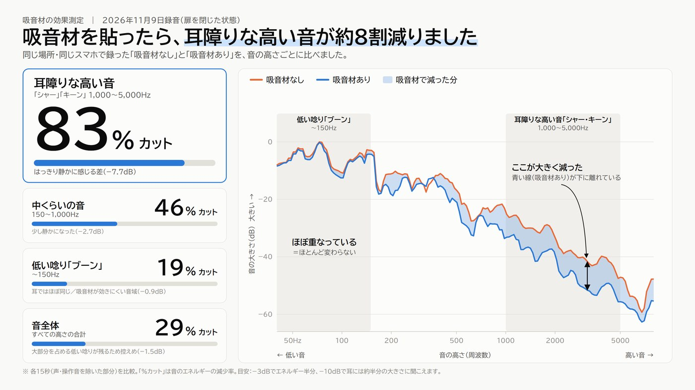

← ポートフォリオに戻る
AIの仕組みづくり・調査 · 2026.11
吸音材の効果の見える化
吸音材を貼る前と後の部屋の音をスマホで録り、聞き比べの音声と、音の高さごとのグラフ、イラストの説明図にしました。「シャー」「キーン」という耳ざわりな高い音は、約8割減っていました。
Python（音声の切り出し・分析）ffmpegGemini（絵）Claude Code
実際の録音です（2026年11月9日・同じ部屋、同じスマホ）
困りごと
商品調査の一つとして、吸音材の効き目を確かめました。ただ、吸音材の効果は「静かになった気がする」で終わりがちです。数字だけを並べても、音に詳しくない人には何が変わったのか伝わりません。
仕組み
- 同じ条件で2回録る吸音材なし／ありを、同じ部屋・同じスマホ・扉を閉じた状態で録音しました。
- 安定した15秒だけを切り出す話し声や操作の音を除き、音が落ち着いている15秒ずつにそろえました。
- 2つを同じ倍率で大きくする元の録音はとても小さいので、どちらも同じ +32.3dB だけ音量を上げました。差はそのまま残るので、比べても公平です。雑音を消すような加工はしていません。
- 音の高さごとに比べる低い唸り（〜150Hz）、中くらいの音（150〜1,000Hz）、耳障りな高い音（1,000〜5,000Hz）に分けて、どれだけ減ったかを計算しました。
- ひと目で分かる絵にするグラフに数字を書き込み、Geminiで描いた絵に文字を重ねて説明図にしました。4コマ、文章多め、絵だけで分かる版など、見せる相手に合わせて作り分けています。
見本
イヤホンで聞くと差が分かりやすいです。「あり」では「シャー」という音が減り、「ブーン」という低い唸りだけが残ります。
01吸音材なし
15秒。部屋の機械の唸りと、高い「シャー」という音が重なっています。
02吸音材あり
15秒。同じ場所・同じ倍率。高い音が減って、低い唸りが残ります。
2つは同じ倍率で音量を上げているので、聞こえる大きさの差はそのまま本物の差です。

音の高さごとの比較。左の低い音では2本の線がほぼ重なり、右の高い音で大きく離れています（クリックで拡大）。
工夫したこと
- 2つの録音を必ず同じ倍率で大きくしました。片方だけ大きくすると、「効いた」ように見せられてしまうからです。
- 「何％減った」だけでなく、減らなかった音も正直に書きました。低い唸りは吸音材が苦手な音で、耳ではほぼ同じに聞こえます。
- 絵はGeminiに描かせ、文字と数字は後から別に重ねました。AIに文字まで描かせると、数字や言葉を間違えやすいからです。
結果
83%
耳障りな高い音（1,000〜5,000Hz）が減った割合。音の大きさでは約 −7.7dB です。
| 音の種類 | 変化 | 減った割合 |
|---|
耳障りな高い音「シャー」「キーン」
1,000〜5,000Hz | −7.7dB | 約83%
|
中くらいの音
150〜1,000Hz | −2.7dB | 約46%
|
低い唸り「ブーン」
〜150Hz | −0.9dB | 約19%
|
| 音全体 | −1.5dB | 約29%
|
部屋の音の大部分は低い唸りなので、音全体では控えめな数字になります。また、スマホを置く位置や向きが2回で少し違うと結果も変わるため、次に測る時は同じ場所に置いて録るよう、注意書きに残しました。